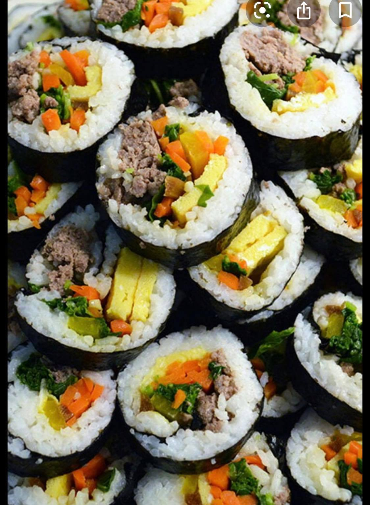
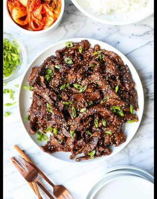
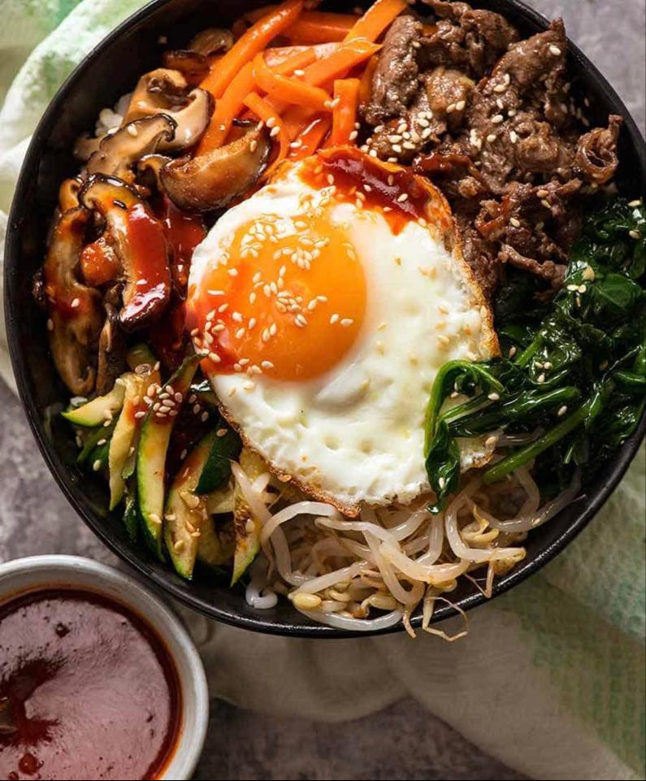
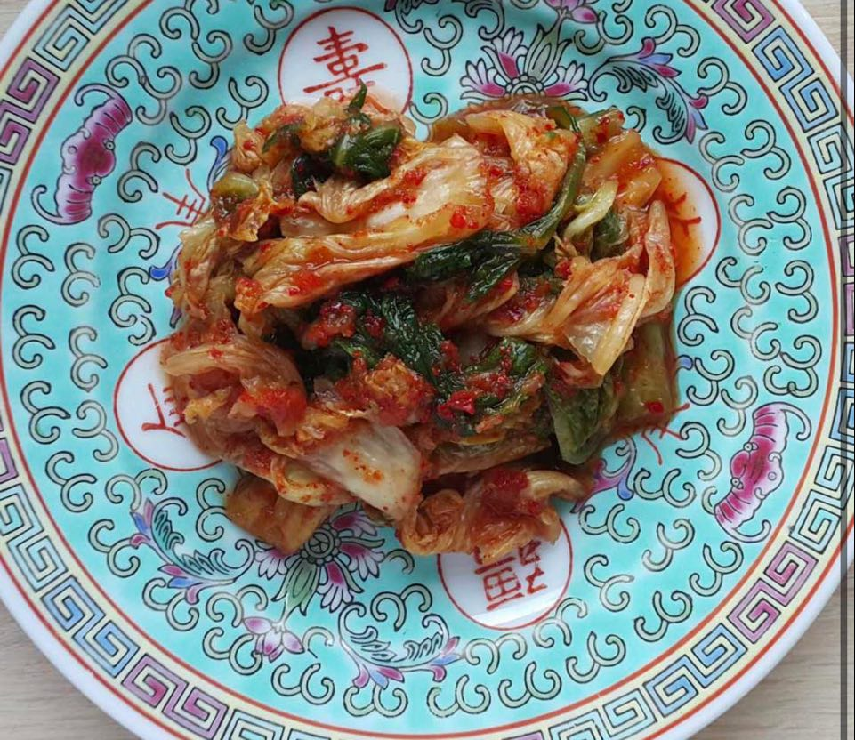

Najpopularniejsze koreanskie dania
Gimbap

Gimbap to w zasadzie rolka z ryżu i warzyw (mogą to być ogórek, marchew lub też szpinak) otoczona glonem.
Czasem w środku pojawiają się także wołowina, lub tuńczyk
Bulgogi

Innym popularnym daniem jest bulgogi, mięso wołowe marynowane w specjalnej zalewie na bazie sosu sojowego, przypraw i
owoców. To mariaż smaków gruszki, jabłka, kiwi i ananasa nadaje potrawie wyjątkowy, słodkawy posmak, a sos sojowy – odpowiednią głębię.
Bibimbap

Podstawą bibimbap są gotowany ryż, wołowina oraz jajko (tradycyjnie surowe, nie jest to jednak zasada i często jest ono
sadzone) uzupełnione zazwyczaj popularnymi warzywami oraz specjalną ostrą pastą.
Kimchi

dość pikantna potrawa koreańska na bazie kiszonej kapusty lub innych fermentowanych warzyw. Ostry smak zawdzięcza papryczce chili,
a wyjątkowego aromatu mogą też dodać owoce morza, imbir, ogórek, rzodkiew i czosnek